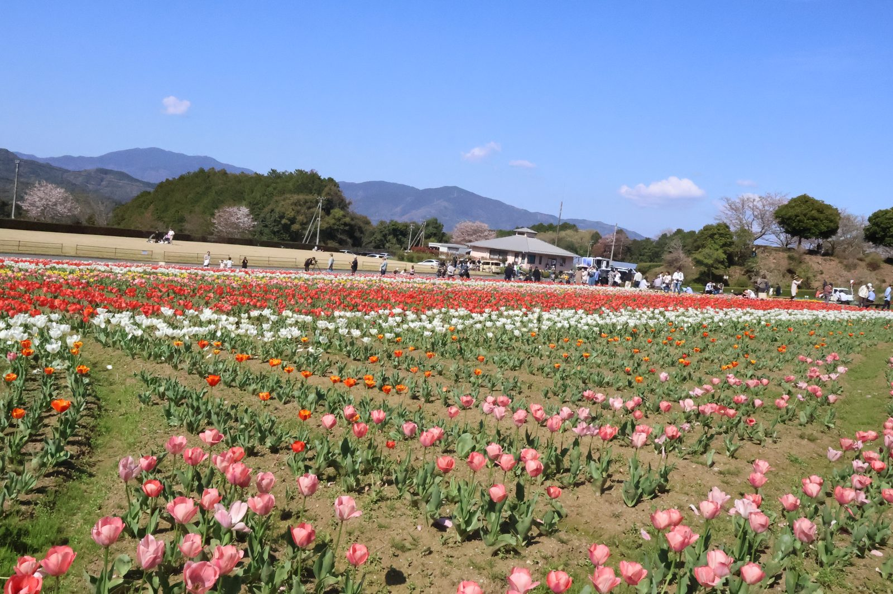

大洲の視点 ・ 出典: 大洲市役所（令和７年度アンケート、情報源日付: 令和７年度）

前に「大洲城・臥龍山荘、まさかの来館者５万人」という記事を書いたけど、その少し後に 「大洲市の歴史的建造物等を活用した持続可能なまちづくりに関するアンケート」（令和７年度、肱南地区 で実施）の結果を見つけたので、市民側の受け止め方も見てみた。
NIPPONIA HOTELや古民家ショップを使ったまちづくりが進んでいることを「知っている」人は89.6％。
それを「積極的に行っていくべき」39.0％＋「必要に応じて行っていくべき」49.4％で、合わせると約９割が推進に肯定的だった。ここまでは、割と好意的な数字。
ただ、地域ＤＭＯの「キタ・マネジメント」を知っている人は67.5％まで落ちて、国内外から評価されている持続可能な取組（シルバーアワード受賞など）を「よく知っている」人はわずか16.9％。
半分近くは「聞いたことはあるがよく知らない」「全く知らない」という回答だった。
さらに、現在の大洲城下町を「持続可能な観光地」として満足できるか、という質問には、「満足」＋「大変満足」を合わせても39％程度で、「どちらでもない」が41.6％と最も多かった。
来館者数５万人という華々しい実績の裏で、市民の実感としては「まあまあ」くらいの温度感、というのが正直なところなのかもしれない。
まちづくりへの支持はあるけど、その中身や評価まではあまり伝わっていない、というのが今回のアンケートから見えた実態だと思う。
アンケートの数字だけ見ても「で、結局何をしてるの？」というところが分からなかったので、 行政側の取り組みも調べてみた。
大洲市はまず2009年に景観条例を施行し、2012年には歴史的風致維持向上計画を策定している。
古民家の所有者に対しては、屋根の修繕などにかかる費用の半分（上限は年200万円）を補助する制度も用意している。
ルールと補助金の両面で、古い町並みを壊さず直せる土台を先につくっていた、ということみたい。
その上で2018年、大洲市はバリューマネジメント、NOTE（ノオト）、伊予銀行と４者で連携協定を結び、地域ＤＭＯ「一般社団法人キタ・マネジメント」を設立した。
大洲市自身が資本金2,000万円を出資する、いわば「官製」の法人。アンケートで認知度が67.5％だったあの団体だ。
この４者のうち「NOTE（ノオト）」は、実は業界ではかなり名の知れた会社だった。
兵庫県丹波篠山市を拠点に、古民家をホテルに再生する「NIPPONIA」ブランドを全国展開している会社で、そのフラッグシップ「篠山城下町ホテル NIPPONIA」は2025年に10周年を迎えたという。
大洲の古民家再生は、いわば全国の「NIPPONIA」モデルの本家と組んで作られた仕組みだったことになる。
大洲だけの独自路線ではなく、全国の古民家再生の潮流の中に位置づけられた事業なんだと分かると、また見え方が変わってくる。
具体的な事業の中身は、古民家の再生。関連会社の株式会社KITAが所有者から町家・古民家を借り上げ、改修した上でホテルなどの事業者に貸し出す仕組みで、これまでの投資額は総額およそ12億円。
このうち半分は大洲市などの行政からの補助金、残り半分は伊予銀行をはじめ地元信用金庫・政府系金融機関・ファンドといった民間資金でまかなわれているという。
事業者からの家賃も、固定額に加えて売上が一定額を超えた分は最大10％を上乗せする２段階方式になっていて、稼げば稼ぐほど再生への再投資にも回る仕組みになっているらしい。
つまり「市が号令をかけて終わり」ではなく、条例・補助金・出資・銀行融資を組み合わせて、古い建物を壊さず活用できる資金の流れそのものを作っているのが実態、ということだと思う。
アンケートでキタ・マネジメントや「持続可能な取組」への認知度が低かったのは、こうした裏側の仕組みが表からは見えにくいからなんだろうなと感じた。